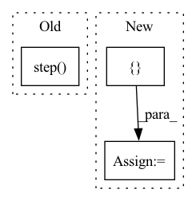

Pattern ID :15222
Before Change
print(f"Epoch[{epoch + 1:05d}/{config.epochs:05d}]({index + 1:05d}/{batches:05d}) MSE loss: {loss.item():.6f}.")
// Update lr
scheduler.step()
def validate(model, valid_dataloader, criterion, epoch, writer) -> float:
// Calculate how many iterations there are under Epoch.After Change
data_time = AverageMeter("Data", ":6.3f")
losses = AverageMeter("Loss", ":6.6f")
psnres = AverageMeter("PSNR", ":4.2f")
progress = ProgressMeter(batches, [ batch_time, data_time, losses, psnresIn pattern: SUPERPATTERN
Frequency: 5
Non-data size: 3
Instances Fragment ID: 51420545
Project Name: lornatang/espcn-pytorch
Commit Name: 3d7da32ace2da2b908bad2a32243b464f206e72a
Time: 2021-11-30
Author: liuchangyu1111@gmail.com
File Name: train.py
M Class Name: AnonimousClass
N Class Name: AnonimousClass
M Method Name: train(7)
N Method Name: train(8)
M Parent Class:
N Parent Class:
M File Name: train.py
N File Name: train.py
M Start Line: 83
M End Line: 117
N Start Line: 156
N End Line: 203
Before Change
metrics = self.evaluate(epoch)
self.model.save(self.model_dir, self.model_name, epoch)
self.scheduler.step( metrics["balanced_accuracy_score"])
self.writer.close()
def evaluate(self, epoch):After Change
val_metrics = self.evaluate()
self.save(epoch)
metrics = {**train_metrics, **val_metrics}
tune.report(**metrics)
def evaluate(self):
self.model.eval() Fragment ID: 51420531
Project Name: rwth-e3d/ifcnet-models
Commit Name: 2680475225399ebb305dfad711024406a3472211
Time: 2021-03-10
Author: 8558936+cemunds@users.noreply.github.com
File Name: src/models/Trainer.py
M Class Name: Trainer
N Class Name: Trainer
M Method Name: train(3)
N Method Name: train(2)
M Parent Class:
N Parent Class:
M File Name: src/models/Trainer.py
N File Name: src/models/Trainer.py
M Start Line: 39
M End Line: 74
N Start Line: 35
N End Line: 70
Before Change
loss.backward()
self.optimizer.step()
self.scheduler.step()
tr_loss += loss.item()
nb_tr_examples += input_ids.size(0)
nb_tr_steps += 1After Change
y_true, y_pred = self.get_outputs(args, data, self.eval_dataloader, pre_train=True)
eval_score = accuracy_score(y_true, y_pred)
eval_results = {
"train_loss": loss,
"eval_acc": eval_score,
"best_acc":best_eval_score,
}
logger.info("***** Epoch: %s: Eval results *****", str(epoch + 1))
for key in sorted(eval_results.keys()):
logger.info(" %s = %s", key, str(eval_results[key]))
Fragment ID: 51420534
Project Name: thuiar/textoir
Commit Name: d5fb8b5033236b5185cbf75e0cbb30e9667b4e0c
Time: 2021-06-04
Author: zhang-hl20@mails.tsinghua.edu.cn
File Name: open_intent_detection/methods/ADB/manager.py
M Class Name: ADBManager
N Class Name: ADBManager
M Method Name: pre_train(3)
N Method Name: pre_train(3)
M Parent Class:
N Parent Class:
M File Name: open_intent_detection/methods/ADB/manager.py
N File Name: open_intent_detection/methods/ADB/manager.py
M Start Line: 59
M End Line: 112
N Start Line: 56
N End Line: 114
Before Change
loss_seg_ce_agg += losses["seg_ce"].item()
loss_seg_dice_agg += losses["seg_dice"].item()
self._scheduler.step()
loss = loss_agg / len(self._train_loader)
loss_bbox = loss_bbox_agg / len(self._train_loader)
loss_cls = loss_cls_agg / len(self._train_loader)After Change
// Put data to gpu
data, mask = data.to(device=self._device), mask.to(device=self._device)
targets = []
for item in bboxes:
target = {
"boxes": item[0].to(dtype=torch.float, device=self._device),
"labels": item[1].to(device=self._device)
}
targets.append(target)
// Make prediction
out = self._model(data, mask)
loss_dict = self._criterion(out, targets)
// Create absolute loss and mult with loss coefficient
loss_abs = 0
for loss_key, loss_val in loss_dict.items():
loss_abs += loss_val * self._config["loss_coefs"][loss_key.split("_")[0]]
self._optimizer.zero_grad()
loss_abs.backward()
// Clip grads to counter exploding grads
max_norm = self._config["clip_max_norm"]
if max_norm > 0:
torch.nn.utils.clip_grad_norm_(self._model.parameters(), max_norm)
self._optimizer.step()
loss_agg += loss_abs.item()
loss_bbox_agg += loss_dict["bbox"].item()
loss_giou_agg += loss_dict["giou"].item()
loss_cls_agg += loss_dict["cls"].item()
loss = loss_agg / len(self._train_loader) Fragment ID: 51420535
Project Name: bwittmann/transoar
Commit Name: d1d610ce7014a86c72c7d5625dbe82be40b2c340
Time: 2022-06-24
Author: bastian.wittmann@tum.de
File Name: transoar/trainer.py
M Class Name: Trainer
N Class Name: Trainer
M Method Name: _train_one_epoch(2)
N Method Name: _train_one_epoch(2)
M Parent Class:
N Parent Class:
M File Name: transoar/trainer.py
N File Name: transoar/trainer.py
M Start Line: 46
M End Line: 88
N Start Line: 42
N End Line: 83
Before Change
)
// compute the previous noisy sample x_t -> x_t-1
latents = self.scheduler.step( noise_pred, t, latents) .prev_sample
// call the callback, if provided
if callback is not None and i % callback_steps == 0:After Change
// eta corresponds to η in DDIM paper: https://arxiv.org/abs/2010.02502
// and should be between [0, 1]
accepts_eta = "eta" in set(inspect.signature(self.scheduler.step).parameters.keys())
extra_step_kwargs = {}
if accepts_eta:
extra_step_kwargs["eta"] = eta
// check if the scheduler accepts generator Fragment ID: 51420539
Project Name: paddlepaddle/paddlenlp
Commit Name: 82bd9b1897dab2a45d17abac0ebbd3c9ed4fda9c
Time: 2023-02-21
Author: 40912707+Yam0214@users.noreply.github.com
File Name: ppdiffusers/examples/community/clip_guided_stable_diffusion.py
M Class Name: CLIPGuidedStableDiffusion
N Class Name: CLIPGuidedStableDiffusion
M Method Name: __call__(19)
N Method Name: __call__(18)
M Parent Class: DiffusionPipeline
N Parent Class: DiffusionPipeline
M File Name: ppdiffusers/examples/community/clip_guided_stable_diffusion.py
N File Name: ppdiffusers/examples/community/clip_guided_stable_diffusion.py
M Start Line: 264
M End Line: 384
N Start Line: 217
N End Line: 405